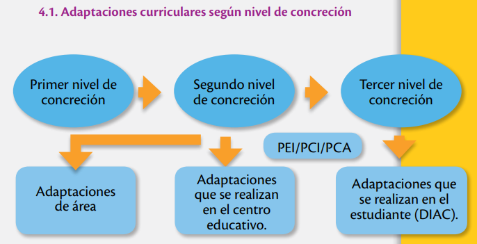
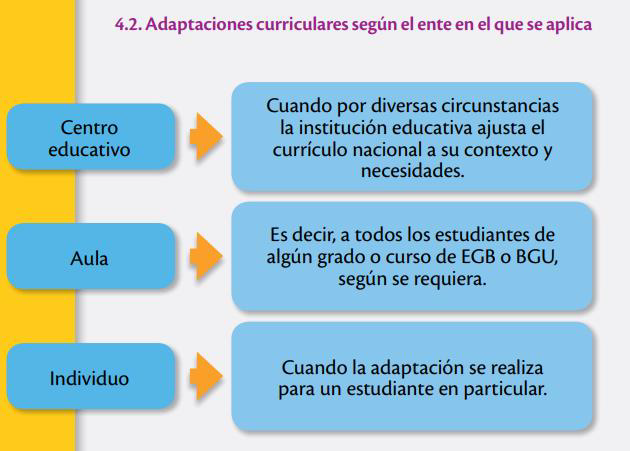
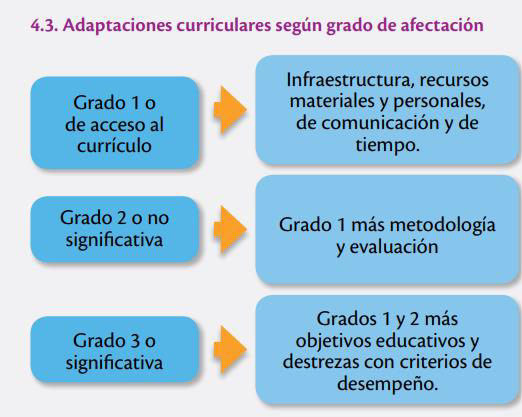
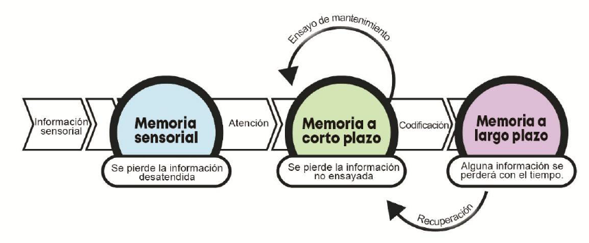
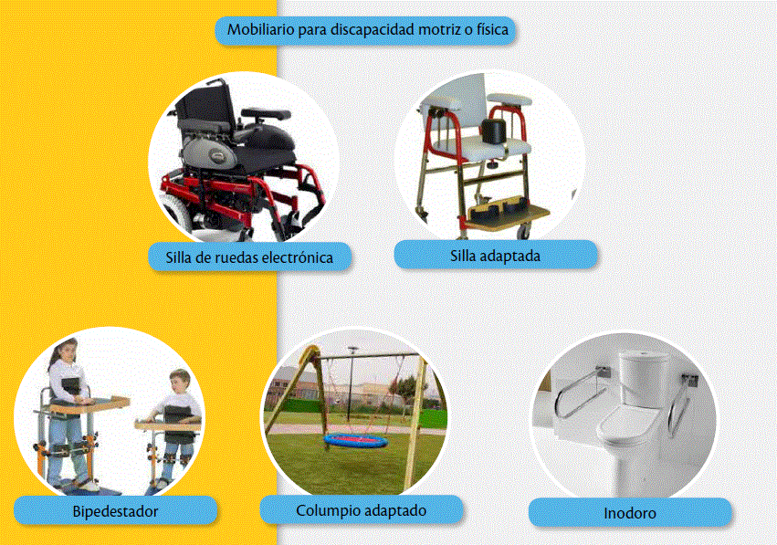
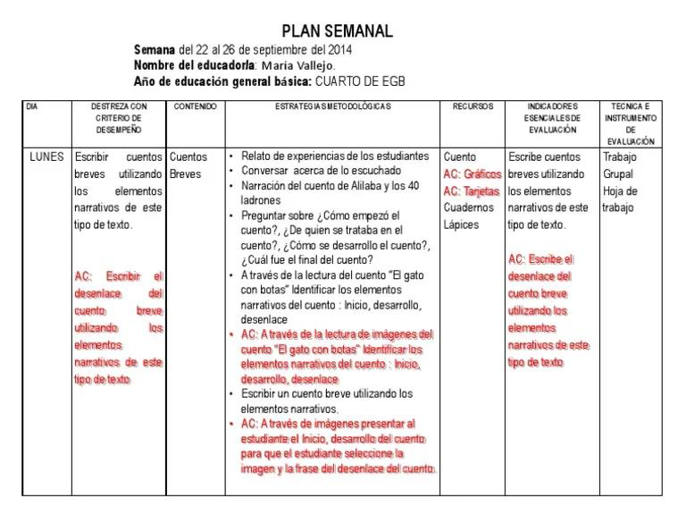
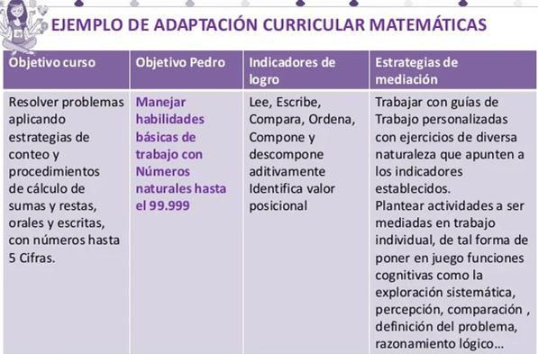
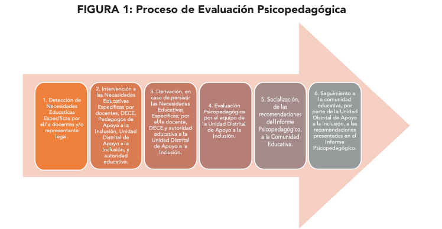

7 UNIDAD III: INTERVENCIÓN PSICOPEDAGÓGICA
⮚ Objetivo 1: Analizar las diferentes tipologías de las adaptaciones curriculares
⮚ Objetivo 2: Describir los modelos de intervención psicopedagógica para la atención a la diversidad.
⮚ Objetivo 3: Evaluar las propuestas de intervención psicopedagógica en función de su eficacia.
Según Bisquerra (1988), la intervención resulta un proceso especializado de ayuda, que coincide en gran medida con la práctica de la orientación, donde los propósitos pueden tener un carácter correctivo, de prevención o desarrollo.
7.1 Adaptaciones curriculares.
Son modificaciones que se realizan en los elementos del currículo, como los objetivos, destrezas, metodología, recursos, actividades, tiempo de realización de la tarea, evaluación, así como en las condiciones de acceso, con el fin de responder a las NEE de cada estudiante. (MINEDUC, 2019).
Flexibles: El currículo puede modificarse.
Basadas en el estudiante: El currículo se adapta al estudiante con NEE.
Contextuales: Se toma en cuenta el contexto inmediato.
Realistas: Es necesario partir de planteamientos realistas, es decir, conocer los recursos disponibles y hasta dónde es posible llegar.
Cooperativas: Los docentes trabajan en equipo para plantear adaptaciones curriculares.
Participativas: Los padres de familia proporcionan información valiosa para la elaboración de adaptaciones curriculares.
7.1.1 Adaptaciones curriculares según nivel de concreción
7.1.1.1 Primer nivel de concreción o macrocurrículo
Hace referencia a lo establecido por un Estado o Gobierno.
7.1.1.2 Segundo nivel de concreción o mesocurrículo
Meso currículo. Se refiere a la institución, Su PEI, PCI, PCA.
7.1.1.3 Tercer nivel de concreción o microcurrículo
El estudiante en función de sus necesidades.

Primer nivel de concreción: Adaptaciones de área.
Segundo nivel de concreción: Adaptaciones que se realizan en el centro educativo. PEI/PCI/PCA.
Tercer nivel de concreción: Adaptaciones que se realizan en el estudiante (DIAC).

Centro educativo: Cuando por diversas circunstancias la institución educativa ajusta el currículo nacional a su contexto y necesidades.
Aula: Es decir, a todos los estudiantes de algún grado o curso de EGB o BGU, según se requiera.
Individuo: Cuando la adaptación se realiza para un estudiante en particular.

Grado 1 o de acceso al currículo: Infraestructura, recursos materiales y personales, de comunicación y de tiempo.
Grado 2 o no significativa: Grado 1 más metodología y evaluación.
Grado 3 o significativa: Grados 1 y 2 más objetivos educativos y destrezas con criterios de desempeño.
Preguntas de reflexión antes de continuar…
1. ¿Por qué es importante que un docente tenga conocimiento de las adaptaciones, su clasificación y su tipología?
1. ¿Alguna vez ha realizado adaptaciones de grado 1,
2 o 3? Cuente brevemente su experiencia.
1. ¿Cuál es su opinión sobre escuela regular y escuela
especializada?
7.1.2 Adaptaciones curriculares según duración
7.1.2.1 Temporales.
Se trata de modificaciones al currículo que se aplican en un tiempo determinado hasta que el estudiante disminuya su desfase escolar. Generalmente, se aplican para estudiantes con NEE no asociadas a la discapacidad.
7.1.2.2 Permanentes.
Son modificaciones que permanecen durante todo el proceso escolar. Generalmente, son necesarias en caso de estudiantes con NEE asociadas a la discapacidad.
7.2 Modelos para la detección e intervención de las Dificultades de aprendizaje
Un “modelo” es el diseño que se utiliza para conceptualizar la naturaleza de la actividad pedagógica llevada a cabo ante las dificultades de aprendizaje.
Por lo tanto, la actividad de cualquier profesional siempre va estar conceptualizada en función del modelo que sigue como referente. Algunos de los más importantes son los siguientes:
Médico Clínico
Estadístico-Psicométrico
Dinámico-Psicoanalítico
Humanista Holística
Modelos Ambientalistas
Teoría del Procesamiento de la información
cognitivo conductual
Constructivismo
Neuroeducación
7.2.1 Modelo Estadístico - Psicométrico
- Según autores es la continuidad del modelo clínico-médico.
- Según el modelo psicométrico, las causas de las Dificultades del Aprendizaje están en el propio individuo, en sus rasgos o atributos psicológicos o, como se señalaba en algunas de las primeras definiciones, en los procesos psicológicos básicos (Aguilera, 2004)
7.2.2 Modelos de Aprendizaje
Cognitivo conductual
Evalúa: Patrones de pensamiento, comportamientos y emociones que influyen en el aprendizaje.
Herramientas: Entrevistas, cuestionarios, observaciones, registros de comportamiento.
Objetivo: Identificar pensamientos irracionales o distorsionados que interfieren con el aprendizaje y desarrollar estrategias para modificarlos.
Aprendizaje Cognitivo Social
Evalúa: Cómo los individuos aprenden a través de la observación, imitación e interacción con otros.
Herramientas: Observaciones, análisis de modelos a seguir, autorreportes.
Objetivo: Identificar factores sociales y ambientales que influyen en el aprendizaje y desarrollar estrategias para optimizarlos.
Teoría del procesamiento de la información
Evalúa: Cómo los individuos reciben, almacenan, procesan y recuperan información.
Herramientas: Tareas cognitivas, cuestionarios, entrevistas.
Objetivo: Identificar fortalezas y debilidades en las habilidades de procesamiento de información y desarrollar estrategias para mejorarlas.
Neurociencia de la Educación
Evalúa: La relación entre el cerebro y el aprendizaje, identificando las bases neurológicas de las dificultades de aprendizaje.
Herramientas: Neuroimágenes, neuropsicología, electroencefalografía (EEG).
Objetivo: Comprender cómo funciona el cerebro durante el aprendizaje y desarrollar intervenciones basadas en la evidencia neurocientífica.
Algunos ejemplos

7.3 Propuestas de adaptaciones curriculares
¿Puede un niño sordo conocer la música?
¿Puede un niño con parálisis cerebral tocar música?
¿Cómo una persona con discapacidad intelectual llegaría a ser dueño de su propio negocio?
¿Puede una persona ciega, cocinar y conducir?
7.3.1 Grado 1

Mobiliario para discapacidad motriz o física
Silla de ruedas electrónica
Silla adaptada
Bipedestador
Columpio adaptado Inodoro
7.3.2 Grado 2

DESTREZA CON CRITERIO DE DESEMPEÑO
Escribir cuentos breves utilizando los elementos narrativos de este tipo de texto.
AC: Escribir el desenlace del cuento utilizando breve los narrativas de este tipo de texto
ESTRATEGIAS METODOLOGICAS
Relato de experiencias de los estudiantes
Conversar acerca de lo escuchado
Narración del cuento de Alibaba y los 40 ladrones
Preguntar sobre ¿Cómo empezó el cuento?, ¿De quien se trataba en el cuento?, ¿Cómo se desarrollo el cuento?, ¿Cuál fue el final del cuento?
A través de la lectura del cuento “B gato con botas Identificar los elementos narrativos del cuento: Inicio, desarrollo, desenlace
AC: A través de la lectura de imágenes del cuento “El gato con botas Identificar los elementos narrativos del cuento Inicio, desarrollo, desenlace
Escribir un cuento breve utilizando los elementos narrativos,
AC: A través de imágenes presentar al estudiante el Inicio, desarrollo del cuento para que el estudiante seleccione la imagen y la frase del desenlace del cuento
RECURSOS
Cuento
AC: Gráficos
AG: Tarjetas
Cuadernos
Lápices
INDICADORES ESENCIALES DE EVALUACIÓN
Escribe cuentos breves utilizando los elementos narrativos de este tipo de texto.
AC: Escribe el desenlace del cuento breve utilizando los elementos narrativos de este tipo de texto
TECNICA E INSTRUMENTO DE EVALUACIÓN
Trabajo Grupal
Hoja de trabajo
7.3.3 Grado 3

Objetivo curso
Resolver problemas aplicando estrategias de conteo y procedimientos de cálculo de sumas y restas, orales y escritas, con números hasta 5 Cifras.
Objetivo Pedro
Manejar habilidades básicas de trabajo con Números naturales hasta el 99.999
Indicadores de logro
Lee, Escribe, Compara, Ordena, Compone y descompone aditivamente Identifica valor posicional
Estrategias de mediación
Trabajar con guias de trabajo personalizadas con ejercicios de diversa naturaleza que apunten a los indicadores establecidos. Plantear actividades a ser mediadas en trabajo individual, de tal forma de poner en juego funciones cognitivas como la exploración sistemática, percepción, comparación, definición del problema, razonamiento lógico…
7.4 Evaluación de la intervención psicopedagógica.
Cuando a un estudiante le cuesta más trabajo acceder a los aprendizajes que a sus compañeros, es posible que presente alguna NEE. Las causas no solo son intrínsecas, sino que también dependen del contexto (familiar, escolar, social) MINEDUC, 2019).
7.4.1 Factores a considerar en la evaluación psicopedagógica
Accesibilidad física
Recursos materiales
Formación del profesorado en áreas afines.
Proyecto Curricular
Recursos Personales
Actitud de padres, docentes y estudiantes
Aspectos físicos y de organización del espacio.
Recursos materiales y de personal.
Programación
Método de aprendizaje
Actividades de enseñanza- aprendizaje
Relaciones
7.4.2 Aspectos del estudiante en la evaluación de la intervención.
- Progreso del Estudiante
Logro de los objetivos específicos de la intervención.
Adquisición de nuevas habilidades y conocimientos.
Mejora en el desempeño académico.
Desarrollo de competencias personales y sociales.
Avance en la autonomía y la autoestima.
- Efectividad de las estrategias
Adecuación de las estrategias a las necesidades del estudiante.
Nivel de comprensión y aplicación de las estrategias por parte del estudiante.
Impacto de las estrategias en el aprendizaje y desarrollo del estudiante.
Dificultades o barreras que obstaculizan la implementación de las estrategias.
Ministerio de Educación (2021)
- Impacto en el contexto educativo
Percepción de los docentes sobre la intervención.
Participación y colaboración de la familia en la intervención.
Adaptaciones curriculares realizadas en el aula.
Cambios en la dinámica y el clima social del aula.
- Satisfacción con la intervención
Opinión del estudiante sobre la intervención.
Percepción de los padres sobre la intervención.
Satisfacción de los docentes con la intervención.
Valoración de la intervención por parte del equipo psicopedagógico.
Ministerio de Educación (2021)
7.4.3 Proceso de evaluación en un centro educativo

1. Detección de Necesidades Educativas Específicas por el/le docentes y/o representante legal
2. Intervención a las Necesidades Educativas Específicas por docentes, DECE Pedagogos de Apoyo a la Inclusión, Unidad Distrital de Apoyo a la Inclusión, y autoridad educativa.
3. Derivación, en caso de persistir las Necesidades Educativas Especificas, por ella docente, DECE y autoridad educativa a la Unidad Distrital de Apoyo a la Inclusión.
4. Evaluación Psicopedagógica por el equipo de la Unidad Distrital de Apoyo a la Inclusión
5. Socialización, de las recomendaciones del Informe Psicopedagógico, a la Comunidad Educativa.
6. Seguimiento a la comunidad educativa, por parte de la Unidad Distrital de Apoyo a la Inclusión, a las recomendaciones presentadas en el Informe Psicopedagógico
7.4.4 Test de evaluación psicopedagógica
| Evaluación Cognitiva | Se centra en la medición de las habilidades cognitivas y mentales, como la memoria, la atención, la percepción y el razonamiento. Las técnicas de exploración en este contexto pueden incluir pruebas psicométricas que miden el cociente intelectual (CI), como el WISC-V. |
| Evaluación Emocional | Se enfoca en comprender las emociones, los estados de ánimo y las reacciones emocionales de una persona. Las técnicas de exploración pueden incluir cuestionarios de autoinforme, escalas de evaluación de síntomas de ansiedad o depresión, observación clínica y entrevistas para explorar experiencias emocionales pasadas y actuales. |
| Evaluación del Lenguaje | se concentra en la comprensión y expresión del lenguaje. Las técnicas de exploración pueden incluir pruebas de habilidades lingüísticas, como el CELF-5 para niños. Además, se pueden realizar análisis de muestras de lenguaje oral o escrito para evaluar la fluidez y la gramática. |
| Evaluación del Comportamiento | busca comprender el comportamiento de una persona en entornos específicos, como el aula o el lugar de trabajo. Las técnicas de exploración pueden incluir escalas de observación del comportamiento, cuestionarios de evaluación de comportamiento, entrevistas con padres, maestros o supervisores, y análisis funcional del comportamiento. |
| Evaluación del desarrollo Socio Emocional | se enfoca en las habilidades sociales y emocionales de un individuo. Las técnicas de exploración pueden incluir cuestionarios de habilidades sociales, observación de interacciones sociales, entrevistas estructuradas y escalas de evaluación de competencias socioemocionales. |
| Evaluación Académica | se refiere a la medición de las habilidades y el rendimiento académico. Las técnicas de exploración incluyen pruebas estandarizadas de lectura, matemáticas y escritura, evaluaciones de logros académicos, observación de actividades de aprendizaje, etc. |
Preguntas frecuentes sobre la evaluación e intervención psicopedagógica
- ¿Cuál es el objetivo de la evaluación psicopedagógica?
- ¿Quién aplica la evaluación psicopedagógica?
- ¿A quién se aplica?
- ¿En qué momento utilizamos los test de evaluación psicopedágogica?
7.4.5 Preguntas de Autoevaluación
¿Cuál es mi propósito al conocer sobre las adaptaciones curriculares?
¿Cuál considero que es el mejor modelo para intervenir?
¿Qué debo mejorar para evaluar e intervenir en las dificultades de aprendizaje?
¿Qué me llevo de esta unidad de estudio?